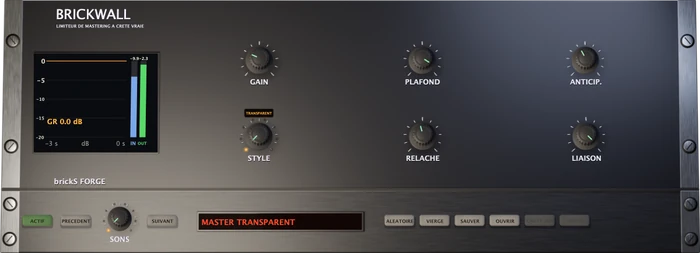

BRICKWALL
Le dernier étage avant l’export : un limiteur de mastering qui ne dépasse jamais le plafond.
Limiteur de mastering · crête vraie
Compris dans le pack plug-ins Forge (14,90 € TTC) et dans Forge Studio (49 €, bientôt). TVA non applicable, art. 293 B du CGI

Le son
Ce que ça change dans votre morceau
BRICKWALL est un limiteur de mastering à anticipation et à crête vraie : aucun dépassement du plafond, même entre deux échantillons. Huit styles de relâche (transparent, punchy, dynamic, allround, aggressive, bus, safe, modern) et un historique de la réduction.
Gain, plafond, style, anticipation, relâche, liaison : six réglages pour monter le niveau sans distorsion audible. Il se pose en dernier sur le master.
Inspiration. Dans l’esprit des limiteurs numériques modernes.
Trois points forts
Une crête vraie
Aucun dépassement, même entre deux échantillons.
Huit styles
Du transparent à l’agressif.
Un historique de réduction
On voit ce que le limiteur fait.
Mode d’emploi
Comment l’utiliser
Mettez-le en dernier sur le master. Réglez le plafond (un peu en dessous de 0 dB), puis montez le gain jusqu’au niveau voulu. Choisissez le style selon le morceau, et ajustez l’anticipation et la relâche.
Surveillez l’historique : une réduction régulière de quelques dB est normale.
Des idées pour démarrer
- Trap : style punchy, gain moyen.
- Boom bap : style dynamic.
- Lo-fi : style safe.
- Master final : style transparent.
Les réglages
Ce que fait chaque réglage
- Gain
- Le niveau poussé dans le limiteur.
- Plafond
- Le niveau maximum de sortie.
- Style
- Transparent, punchy, dynamic, allround, aggressive, bus, safe, modern.
- Anticipation
- Le temps pour attraper les pics à l’avance.
- Relâche
- La vitesse de retour du gain.
- Liaison
- Relie les deux canaux.
Pour qui
Quand le sortir
Pour le mastering d’un morceau : trap, drill, hip-hop, tout ce qui doit être fort sans distorsion.
Fiche technique
- Formats
- Audio Unit, VST3
- Système
- macOS 10.15 ou plus récent, Apple Silicon et Intel
- Entrées / sorties
- Entrée et sortie stéréo
- Inspiration
- Dans l’esprit des limiteurs numériques modernes.
Les noms de produits et marques cités appartiennent à leurs propriétaires respectifs ; ils sont utilisés uniquement pour décrire l’inspiration. BrickS n’est affilié à aucune de ces marques.